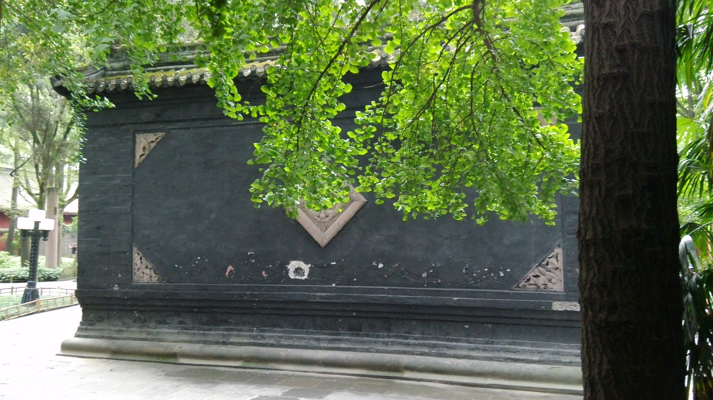
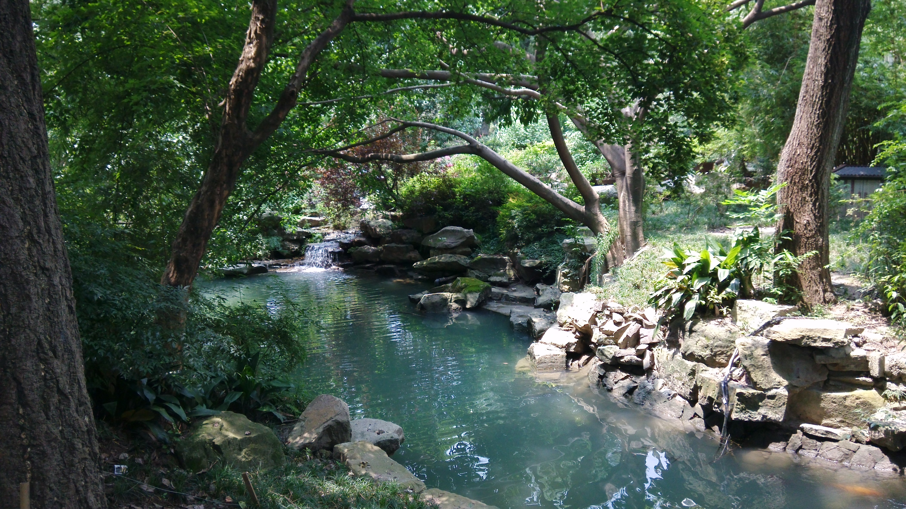
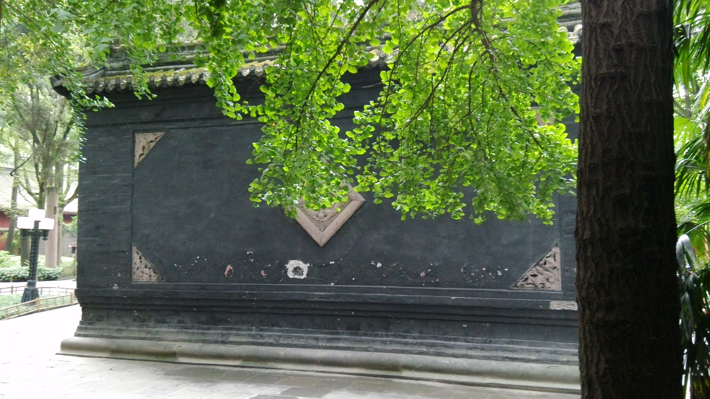
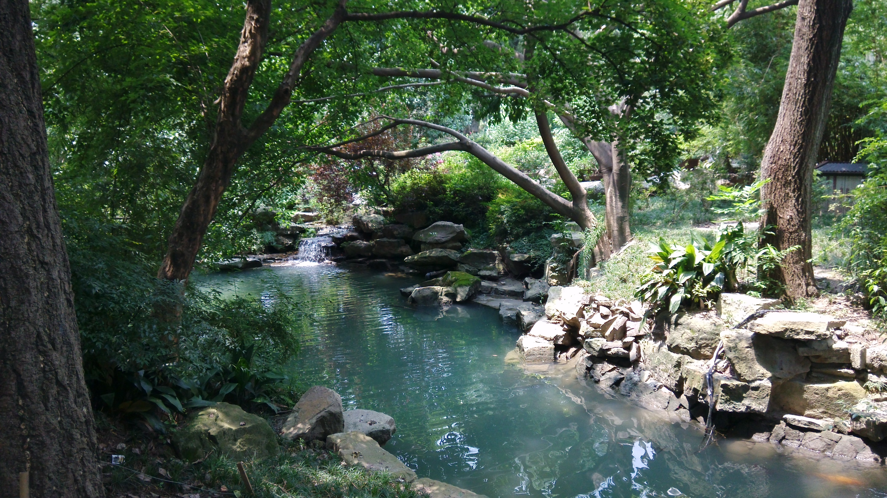

賨都渠县
晚上的滨河路上，散步的人格外多。渠江沿岸灯火辉明。
汉阙之乡
家里的樱桃花又开了，今年没能回去，好久未见了。
用幻想的形式，表现人类在未来世界的物质精神文化生活和科学技术远景，其内容交织着科学事实和预见、想象。
爱情本身容易牵动人的情绪，小说又常以人物的冲突情节来反映人物性格，爱情往往存有冲突性，这便成为小说作家常用的题材。
悬疑小说是具有神秘特性的推理文学，可以唤起人们的本能、刺激人们的好奇心。
奇幻小说的故事或者发生在与现实世界规律相左的“第二世界”中，或者是在现实地球中加入超自然因素。
东城高且长，逶迤自相属。回风动地起，秋草萋已绿。 四时更变化，岁暮一何速！晨风怀苦心，蟋蟀伤局促。 荡涤放情志，何为自结束！燕赵多佳人，美者颜如玉。 被服罗裳衣，当户理清曲。音响一何悲！弦急知柱促。 驰情整巾带，沈吟聊踯躅。思为双飞燕，衔泥巢君屋。
渠县，隶属于四川省达州市，地理坐标介于东经106°38′—107°15′，北纬30°38′—31°16′之间。 渠县地处川东平行岭谷区和川中紫色丘陵区的过渡地带，属亚热带季风气候，全县总面积2018.37平方千米。 户籍人口134.38万人，常住人口111.61万人。
渠县早在新石器时期便有了人类活动，殷商时期賨人在今土溪镇城坝村建立了国都城，周赧王元年（公元前314年）设置宕渠县， 明洪武九年（1376年）定名渠县，还曾建置郡、州治地，相当长的历史时期是川东北政治、经济、文化的中心。
2018年，渠县实现地区生产总值（GDP）274.72亿元，三次产业结构比为23.8：33.9：42.3，人均GDP达24309元； 公共财政收入17.82亿元；城镇和农村居民人均可支配收入分别为30095元、14657元。
賨都渠县
晚上的滨河路上，散步的人格外多。渠江沿岸灯火辉明。
汉阙之乡
家里的樱桃花又开了，今年没能回去，好久未见了。
 



Contacts
Welcome to communicate with me
欢迎来和我交流鸭
期待您的意见和建议
成都市成华区
二仙桥东三路1号
8619938486534
1379907659@qq.com